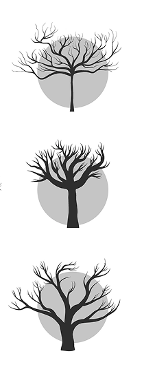

Identificar uma árvore pode ser desafiador. A floração nos ajuda bastante. Mas nem sempre a época do ano nos permite esse dado. O formato das folhas é bastante útil nesse sentido, já que nossas árvores não precisam se desfazer das folhagens para enfrentar invernos rigorosos, não é mesmo? Sua melhor ferramenta será sempre curiosidade e repertório. Você pode criar estratégias como se dedicar a conhecer uma espécie por mês. 12 por ano, 120 por década. Nesse ritmo pujante, daqui a mais ou menos 50 anos, você terá conhecido todas as espécies de BH. Algumas árvores frutíferas você provavelmente já sabe identificar, não é mesmo? Como um belíssimo e evidente pé de manga. =)
O Brasil é o país com a maior biodiversidade arbórea do mundo, com quase 9 mil espécies de árvores catalogadas até então. Esse é um excelente motivo para que você ande pelas ruas prestando atenção nesses incríveis seres vivos que edificaram suas sopas e raízes por aqui, na mesma periferia galática que também vivemos.
